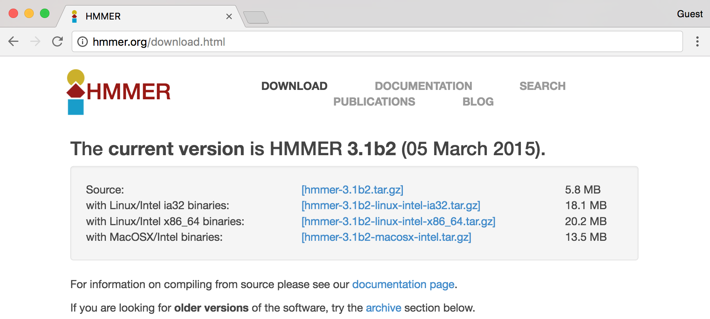
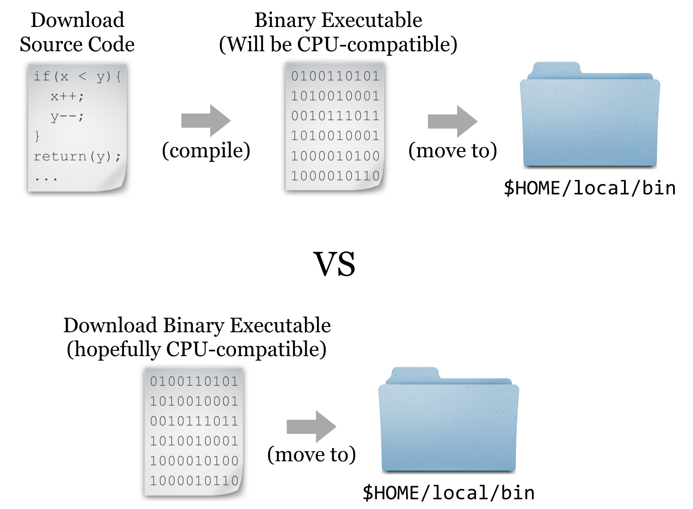
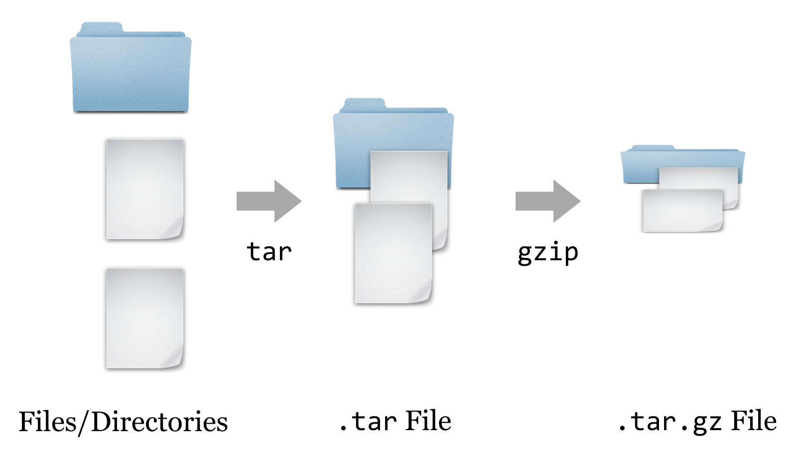
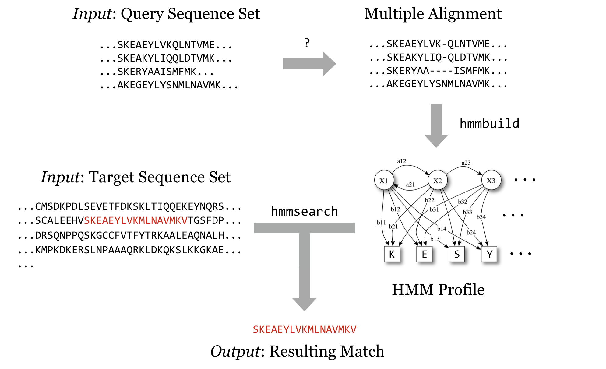
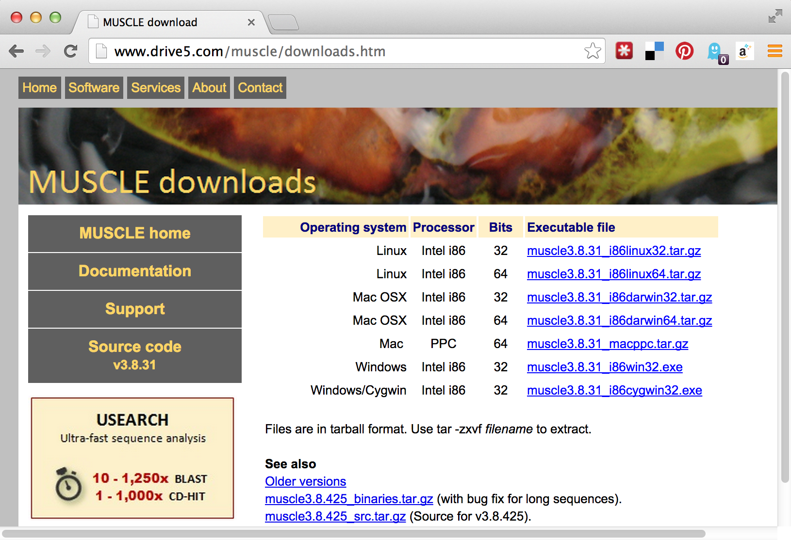

Chapter 6 Installing (Bioinformatics) Software
Ideally, the computational infrastructure to which you have access already includes a host of specialized software packages needed for your work, and the software installations are kept up to date as developers make improvements. If this isn’t the case, you might consider bribing your local system administrator with sweets and caffeine. Failing that, you’re likely to have to install the software you need yourself.
Installing more sophisticated software than the simple scripts described in chapter 5, “Permissions and Executables,” will follow the same basic pattern: (1) obtain executable files, (2) get them into $HOME/local/bin, and (3) ensure that $HOME/local/bin is present in the $PATH environment variable. Chapter 5 covered step 3, which needs to be done only once for our account. Steps 2 and 3, however, are often quite different depending on how the software is distributed.
In this chapter, we’re going to run through an example of installing a bioinformatics suite known as HMMER. This software searches for protein sequence matches (from a set of sequences) based on a probabilistic hidden Markov model (HMM) of a set of similar protein sequences, as in orthologous proteins from different species. The motivation for choosing this example is not so we can learn about HMM modeling or this software suite specifically, but rather that it is a representative task requiring users to download files, install software in different ways, and obtain data from public repositories.
Installing Software without a Package Manager
The first step to installing HMMER without a package manager is to find it online. A simple web search takes us to the homepage:
Conveniently, we see a nice large “Download” button, but the button indicates that the download is made for MacOS X/Intel, the operating system running on my personal laptop. Because we are remotely logged in to a Linux computer, this download won’t work for us. Clicking the “Alternative Download Options” link reveals options that might work for the Linux system we’re using.

In this screenshot, we see a number of interesting download options, including one for “Source,” two for “Linux binaries,” and below a suggestion of some documentation, to which we’ll return later.
Source or Binary?
Some bioinformatics software is created as a simple script of the kind discussed in chapter 5: a text file with a #! line referencing an interpreting program (that is hopefully installed on the system) and made executable with chmod.
But it turns out that such interpreted programs are slow owing to the extra layer of execution, and for some applications, the convenience and relative ease aren’t worth the loss in speed. In these cases, software may be written in a compiled language, meaning that the program code starts as human-readable “source code” but is then processed into machine-readable binary code. The trick is that the process of compilation needs to be independently performed for each type of CPU. Although there are fewer CPU types in common use than in days past, both 32- and 64-bit x86 CPU architectures are still common, and software compiled for one won’t work on the other. If the developer has made available compiled binaries compatible with our system, then so much the better: we can download them, ensure they are executable, and place them in $HOME/local/bin. Alternatively, we may need to download the source code files and perform the compilation ourselves. In some cases, developers distribute binaries, but certain features of the program can be customized in the compilation process.

For the sake of completeness, we’ll do a source install of HMMER; later, we’ll get some other software as binaries.17
Downloading and Unpacking
We’re going to download the source files for HMMER; first, we are going to create a new directory to store downloads, called downloads, in our home directory (you may already have such a directory).
[oneils@mbp ~]$ cd $HOME
[oneils@mbp ~]$ mkdir downloads
[oneils@mbp ~]$ cd downloads
[oneils@mbp ~/downloads]$
If we were to click on the link in the HMMER download page, the web browser would attempt to download the file located at the corresponding URL (http://eddylab.org/software/hmmer3/3.1b2/hmmer-3.1b2.tar.gz) to the local desktop. Because we want the file downloaded to the remote system, clicking on the download button won’t work. What we need is a tool called wget, which can download files from the Internet on the command line.18 The wget utility takes at least one important parameter, the URL, to download. It’s usually a good idea to put URLs in quotes, because they often have characters that confuse the shell and would need to be escaped or quoted. Additionally, we can specify -O <filename>, where <filename> is the name to use when saving the file. Although not required in this instance, it can be useful for URLs whose ending file names aren’t reasonable (like index.php?query=fasta&search=drosophila).
[oneils@mbp ~/downloads]$ wget 'http://eddylab.org/software/hmmer3/3.1b1/h
mmer-3.1b1.tar.gz' -O hmmer-3.1b1.tar.gz
At this point, we have a file ending in .tar.gz, known as a “gzipped tarball,” representing a collection of files that have first been combined into a single file (a tarball), and then compressed (with the gzip utility).

To get the contents out, we have to reverse this process. First, we’ll un-gzip the file with gunzip hmmer-3.1b1.tar.gz19, which will replace the file with the un-gzipped hmmer-3.1b1.tar.20 From there, we can un-tar the tarball with tar -xf hmmer-3.1b1.tar (the -x indicates extract, and the f indicates that the data will be extracted from the specified file name).21
[oneils@mbp ~/downloads]$ ls
hmmer-3.1b1.tar.gz
[oneils@mbp ~/downloads]$ gunzip -d hmmer-3.1b1.tar.gz
[oneils@mbp ~/downloads]$ ls
hmmer-3.1b1.tar
[oneils@mbp ~/downloads]$ tar -xf hmmer-3.1b1.tar
[oneils@mbp ~/downloads]$ ls
hmmer-3.1b1 hmmer-3.1b1.tar
It looks like the gzipped tarball contained a directory, called hmmer-3.1b1.
Other Download and Compression Methods
Before continuing to work with the downloaded source code, there are a couple of things to note regarding compressed files and downloading. First, although gzipped tarballs are the most commonly used compression format for Unix-like systems, other compression types may also be found. They can usually be identified by the file extension. Different tools are available for each type, though there is also a generic uncompress utility that can handle most common types.
| Extension | Decompress Command |
|---|---|
file.bz2
|
bunzip2 file.bz2
|
file.zip
|
unzip file.zip
|
file.tgz
|
tar -xfz file.tgz (same as .tar.gz)
|
The most common syntax for creating a gzipped tarball uses the tar utility, which can do both jobs of tarring and gzipping the inputs. As an example, the command tar -cvzf hmmer_compress_copy.tar.gz hmmer-3.1b1 would create (c), with verbose output (v), a gzipped (z) tarball in a file (f) called hmmer_compress_copy.tar.gz from the input directory hmmer-3.1b1.
Traditionally, zipped files of source code were the most common way to distribute software. More recently, version control systems (used by developers to track changes to their software over time) have become web-enabled as a way to distribute software to end-users. One such system is git, which allows users to download entire directories of files using a “clone URL” over the web. GitHub is a similarly popular page for hosting these projects (see chapter 14, “Version Control with git”, for more information on git and GitHub).
Compiling the Source
Having downloaded and unpacked the HMMER source code, the first step is to check the contents of the directory and look for any README or INSTALL files. Such files are often included and contain important information from the software developer.
[oneils@mbp ~/downloads]$ cd hmmer-3.1b1
[oneils@mbp ~/hmmer-3.1b1]$ ls
aclocal.m4 configure.ac INSTALL Makefile.in src
config.guess COPYRIGHT install-sh profmark testsuite
config.sub documentation libdivsufsort README tutorial
configure easel LICENSE RELEASE-NOTES Userguide.pdf
Taking a look at the contents of the hmmer-3.1b1 directory, there is an INSTALL file, which we should read with less. Here’s the top part of the file:
Brief installation instructions
HMMER 3.1b1; May 2013
-------------------------------------------------------------
These are quick installation instructions. For complete documentation,
including customization and troubleshooting, please see the
Installation chapter in the HMMER User's Guide (Userguide.pdf).
Starting from a source distribution, hmmer-3.1b1.tar.gz:
uncompress: uncompress hmmer-3.1b1.tar.gz
unpack: tar xf hmmer-3.1b1.tar
move into new directory: cd hmmer-3.1b1
configure: ./configure
build: make
automated tests: make check
automated install: make install
The installation documentation describes a number of commands, including many we’ve already run (for extracting the data from the gzipped tarball). There are also four more commands listed: ./configure, make, make check, and make install. Three of these comprise the “canonical install process”—make check is an optional step to check the success of the process midway through. The three important steps are: (1) ./configure, (2) make, and (3) make install.
-
The contents of the directory (above) include
configureas an executable script, and the command./configureexecutes the script from the present working directory. This script usually verifies that all of the prerequisite libraries and programs are installed on the system. More importantly, this step may set some environment variables or create a file calledMakefile, within which will be instructions detailing how the compilation and installation process should proceed, customized for the system. -
Actually,
makeis an interpreting program much likebash(which makeis likely to return/usr/bin/make—it’s a binary program). When runningmake, its default behavior is to look for a file calledMakefilein the current directory, and run a default set of commands specified in theMakefilein the order specified. In this case, these default commands run the compilation programs that turn the source code into executable binaries. -
The make
install commandagain executes make, which looks for theMakefile, but this time we are specifying that the “install” set of commands in theMakefileshould run. This step copies the binary executable files (and other supporting files, if necessary) to the install location.
This final step, make install, may lead us to ask: what is the install location? By default, it will be something like /usr/bin—a system-wide location writable to by only the administrator. So, unless we are logged in as root (the administrator), the final step in the process will fail. We must specify the install location, and although the install itself happens in the third step, the entire process is configured in the first step. There may be many options that we can specify in the ./configure step, though the install location (known as the PREFIX) is by far the most commonly used. Running ./configure --help prints a lot of information; here’s the relevant section:
Installation directories:
--prefix=PREFIX install architecture-independent files in PREFIX
[/usr/local]
--exec-prefix=EPREFIX install architecture-dependent files in EPREFIX
[PREFIX]
The --prefix option is the one we’ll use to determine where the binaries should be located. Although our executable binaries will eventually go in $HOME/local/bin, for this option we’re going to specify $HOME/local, because the bin portion of the path is implied (and other directories like lib and share might also be created alongside the bin directory). Finally, our modified canonical install process will consist of three steps: ./configure --prefix=$HOME/local, make, and make install.
[oneils@mbp ~/downloads/hmmer-3.1b1]$ ./configure --prefix=$HOME/local
configure: Configuring HMMER for your system.
checking build system type... x86_64-unknown-linux-gnu
checking host system type... x86_64-unknown-linux-gnu
...
[oneils@mbp ~/hmmer-3.1b1]$ make
SUBDIR easel
make[1]: Entering directory `/home/oneils/downloads/hmmer-3.1b1/easel'
CC easel.o
CC esl_alphabet.o
...
[oneils@mbp ~/hmmer-3.1b1]$ make install
/usr/bin/install -c -d /home/oneils/local/bin
/usr/bin/install -c -d /home/oneils/local/lib
/usr/bin/install -c -d /home/oneils/local/include
...
At this point, if we navigate to our $HOME/local directory, we will see the added directories and binary files.
[oneils@mbp ~/downloads/hmmer-3.1b1]$ cd $HOME/local
[oneils@mbp ~/hmmer-3.1b1]$ ls
bin include lib share
[oneils@mbp ~/hmmer-3.1b1]$ cd bin
[oneils@mbp ~/hmmer-3.1b1]$ ls
alimask hmmc2 hmmfetch hmmpress hmmsim myprog.sh phmmer
hmmalign hmmconvert hmmlogo hmmscan hmmstat nhmmer
hmmbuild hmmemit hmmpgmd hmmsearch jackhmmer nhmmscan
Because these executable files exist in a directory listed in the $PATH variable, we can, as always, type their names on the command prompt when working in any directory to run them. (Though, again, we may need to log out and back in to get the shell to see these new programs.22)
Installation from Binaries
Our objective is to run HMMER to search for a sequence-set profile in a larger database of sequences. For details, the HMMER documentation (available on the website) is highly recommended, particularly the “Tutorial” section, which describes turning a multiple alignment of sequences into a profile (with hmmbuild) and searching that profile against the larger set (with hmmsearch). It is also useful to read the peer-reviewed publication that describes the algorithms implemented by HMMER or any other bioinformatics software. Even if the material is outside your area of expertise, it will reveal the strengths and weaknesses of software.

We’ll soon get to downloading query and target sequence sets, but we’ll quickly come to realize that although the programs in the HMMER suite can produce the profile and search it against the target set, they cannot produce a multiple alignment from a set of sequences that are similar but not all the same length. Although there are many multiple-alignment tools with different features, we’ll download the relatively popular muscle. This time, we’ll install it from binaries.
It’s worth discussing how one goes about discovering these sequences of steps, and which tools to use. The following strategies generally work well, though creativity is almost always rewarded.
- Read the methods sections of papers with similar goals.
- Ask your colleagues.
- Search the Internet.
- Read the documentation and published papers for tools you are already familiar with, as well as those publications that cite them.
- Don’t let the apparent complexity of an analysis prevent you from taking the first steps. Most types of analyses employ a number of steps and many tools, and you may not have a clear picture of what the final procedure will be. Experiment with alternative tools, and look for help when you get stuck. Be sure to document your work, as you will inevitably want to retrace your steps.
If we visit the muscle homepage, we’ll see a variety of download options, including binaries for our system, Linux.

Unfortunately, there appear to be two options for Linux binaries: 32-bit and 64-bit. How do we know which of these we want? We can get a hint by running the uname program, along with the -a parameter to give as much information as possible.
[oneils@mbp ~]$ uname -a
Linux 172.31.88.3 3.2.0-37-virtual #58-Ubuntu SMP Thu Jan 24 15:48:03 UTC 2013
x86_64 x86_64 x86_64 GNU/Linux
The uname program gives information about the operating system, which in this case appears to be GNU/Linux for a 64-bit, x86 CPU. If any of the binaries are likely to work, it will be the “i86linux64” set. We’ll wget that gzipped tarball in the downloads directory.
[oneils@mbp ~]$ cd downloads
[oneils@mbp ~/downloads]$ wget'http://www.drive5.com/muscle/downloads3.8.31/muscle3.8.31_i86linux64.tar.gz'
Note that in this case we haven’t used the -O option for wget, because the file name described by the URL (muscle3.8.31_i86linux64.tar.gz) is what we would like to call the file when it is downloaded anyway. Continuing on to unpack it, we find it contains only an executable that we can attempt to run.
[oneils@mbp ~/downloads]$ ls
hmmer-3.1b1 hmmer-3.1b1.tar muscle3.8.31_i86linux64.tar.gz
[oneils@mbp ~/downloads]$ tar -xfz muscle3.8.31_i86linux64.tar.gz
[oneils@mbp ~/downloads]$ ls
hmmer-3.1b1 muscle3.8.31_i86linux64
hmmer-3.1b1.tar muscle3.8.31_i86linux64.tar.gz
[oneils@mbp ~/downloads]$ ./muscle3.8.31_i86linux64
MUSCLE v3.8.31 by Robert C. Edgar
http://www.drive5.com/muscle
This software is donated to the public domain.
...
Because it didn’t report an execution error, we can install it by copying it to our $HOME/local/bin directory. While doing so, we’ll give it a simpler name, muscle.
[oneils@mbp ~/downloads]$ cp muscle3.8.31_i86linux64 $HOME/local/bin/muscle
[oneils@mbp ~/downloads]$
Now our multiple aligner, muscle, is installed!
Exercises
Follow the steps above to install the HMMER suite (from source) as well as
muscle(from binaries) in your$HOME/local/bindirectory. Ensure that you can run them from anywhere (including from your home directory) by runningmuscle --helpandhmmsearch --help. Both commands should display help text instead of an error. Further, check that the versions being found by the shell are from your home directory by runningwhich hmmsearchandwhich muscle.Determine whether you have the “NCBI Blast+” tools installed by searching for the
blastnprogram. If they are installed, where are they located? If they are not installed, find them and install them from binaries.Install
sicklefrom thegitrepo at https://github.com/najoshi/sickle. To install it, you will need to follow the custom instructions inside of theREADME.mdfile. If you don’t have thegitprogram, it is available for binary and source install at http://git-scm.com.
If you have administrator privileges on the machine, software repositories curated with many packages are also available. Depending on the system, if you log in as root, installing HMMER may be as simple as running
apt-get install hmmeroryum install hmmer.↩︎A similar tool called
curlcan be used for the same purpose. The feature sets are slightly different, so in some casescurlis preferred overwgetand vice versa. For the simple downloading tasks in this book, either will suffice.↩︎Alternatively,
gzip -d hmmer-3.1b1.tar.gz.↩︎The
gziputility is one of the few programs that care about file extensions. While most programs will work with a file of any extension,gziprequires a file that ends in.gz. If you are unsure of a file’s type, thefileutility can help; for example,file hmmer-3.1b1.tar.gzreports that the file is gzip-compressed data, and would do so even if the file did not end in.gz.↩︎Note that it is not strictly necessary to unzip and then un-tar in two separate steps. We can unzip and un-tar with the single command
tar -xfz hmmer-3.1b1.tar.gz, wherezwill filter the file through gzip.↩︎t’s not strictly necessary to log back out and back in; when working in
bash, runninghash -rwill cause the shell to update its list of software found in $PATH.↩︎